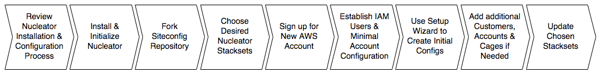

Nucleator Configuration Process Overview
Siteconfig Overview
Nucleator makes it easy for a Service Provider to manage related sets of AWS Infrastructure for multiple internal or external sets of stakeholders across multiple AWS Accounts. A "Service Provider" could be a single team within an organization that is servicing multiple internal Customers within their department or enterprise. A "Service Provider" could also be a company offering managed services to multiple external Customers. Nucleator calls each group of a Service Provider's internal or external stakeholders a "Customer".
The set of relationships among a Service Provider, its Customer(s), their DNS Subdomain(s), AWS Account(s), Account-specific credentials and Nucleator Cage(s) is managed in a set of Nucleator configuration files called the siteconfig. Because this set of relationships can be quite detailed, the siteconfig is mantained under revision control in git. A representative siteconfig is kept in the nucleator-core-siteconfig public repository. You can fork this repository into your own github account so you can capture your initial Customer and Account information. Nucleator provides a wizard to make it easy to add new Customer's and your AWS Account information to your Siteconfig, so you can commit the info to your siteconfig repository.
Each Nucleator Customer can use one or more AWS Accounts. Each AWS Account is always dedicated to a single Nucleator Customer.
It is quite common for Service Providers to establish multiple AWS Accounts for use by their internal stakeholders, external stakeholders, partners or customers. Often, those accounts use AWS' consolidated billing capabilities so that all of the Accounts are tied to a single master Account that is controlled by the Service Provider. Establishing multiple AWS Accounts provides a number of benefits:
Even though Nucleator supports multiple Customers and AWS Accounts, to get started with Nucleator, we will establish a single new AWS Account for use with a single Nucleator Customer. The nucleator setup wizard command makes it very straightforward to generate this initial siteconfig. In the future, it is easy to add additional Customers, additional Accounts for each Customer, and to define additional Cages within each Account and represent those in your own siteconfig repository.
Naming Conventions
Nucleator establishes naming conventions so that it can help you to manage multiple AWS Accounts for multiple Customers. These names allow you to accurately state your intent when interacting with Nucleator. Nucleator refers to Customers and Accounts as follows:
customer: a string descriptor of the customer on who's behalf the Account was created. This may be your own organization, or someone else's. For example,
"47lining","mycompany","mycustomer","mydepartment"- account: a string descriptor of the underlying purpose of the account. For example,
"master","test1","analytics","research","adhoc"
Customer Name
The "Customer Name" is used to refer to a particular Nucleator Customer within Nucleator's configuration files, within commands invoked through Nucleator's command line interface, and within Jobs invoked through Nucleator's Jenkins-based User Interface. Nucleator refers to Customer Name as customer, or sometimes as customer_name.
Note that Customer name must contain only lowercase alphanumeric characters and the dash character. The Customer name will be used in S3 bucket names and AWS CloudFormation template names, which must follow this convention. If a customer name that does not match these restrictions is used, the command line tool will print an error message noting that the customer name is invalid.
Customer name will be combined with account and cage names by nucleator to ensure that AWS resources such as S3 buckets and CloudFormation templates have unique and meaningful names. Some of the AWS Resources that are named in this way have length limitations, and choosing a very long Customer name can contribute to exceeding those limitations. If the combined name for an AWS Resource exceeds a known length limit, Nucleator will truncate the combined name and add a unique hash such that the resulting string conforms to the limit.
Account Friendly Name
The Account "Friendly Name" is used as a convenient way to refer to one of a particular Customer's AWS Accounts. It must be unique within the Customer. The Account Friendly Name is intended to be meaningful and friendly to humans - it maps to an AWS Account Number, but is much easier to use and remember. Nucleator refers to the Account Friendly Name as account, or sometimes as account_name.
Like the Customer name, the account name may contain only lowercase alphanumeric characters and the dash character. If an account name is used that does not meet these restrictions the command line tool will print an error noting that the account name is invalid.
Account name will be combined with customer and cage names by nucleator to ensure that AWS resources such as S3 buckets and CloudFormation templates have unique and meaningful names. Some of the AWS Resources that are named in this way have length limitations, and choosing a very long Account Friendly name can contribute to exceeding those limitations. If the combined name for an AWS Resource exceeds a known length limit, Nucleator will truncate the combined name and add a unique hash such that the resulting string conforms to the limit.
Siteconfig Contents
Nucleator expects a set of configuration files, referred to collectively as the Nucleator siteconfig, to define the Customer(s) that your Nucleator installation is aware of, the AWS Accounts for each of those Customers, the Nucleator Cages that are available, and other Customer- and deployment-specific choices. You manage the siteconfig that you would like Nucleator to use in your own git repository. Nucleator will install it the same way it installs other Nucleator Stacksets. Some information that is logically part of your siteconfig is sensitive in nature. This information is not kept in git but in a Nucleator configuration directory. siteconfig contains the following information and structure:
siteconfig directory
Customer-specific configurations are maintained in your own git repository. Nucleator will access your siteconfig repository in the same way that it accesses other Nucleator Stacksets that you have selected, and exports its contents to ~/.nucleator/siteconfig/. You should always make changes to your siteconfig via a local clone, commiting and pushing your changes. You can use git's standard capabilities to make changes to your siteconfig repo on a branch, and only merge them to the branch that Nucleator is using when you are ready for the changes to take effect.
~/.nucleator/siteconfig/
<customer_name>.yml # customer configuration file for <customer_name>
<customer_name>-<cage_name>.yml # cage configuration file for cage <cage_name> for customer <customer_name>
To facilitate review of the siteconfig that Nucleator is using, nucleator init creates a siteconfig symlink within your ~/.nucleator configuration directory to enable easy access to the Customer and Cage configuration files within the sitek=config that is obtained from revision control. The source for the siteconfig repository that Nucleator uses is specified in ~/.nucleator/sources.yml and cloned via nucleator update. The target of the siteconfig symlink is ~/.nucleator/contrib/siteconfig/ansible/roles/siteconfig/vars/
nucleator-core-siteconfig includes a Customer configuration template for a new customer in {customer}.yml and an example, completed Customer configuration file in example.yml at ansible/roles/siteconfig/vars/ within the nucleator-core-siteconfig repository. You should always make changes to your siteconfig in git so that they can be reliably versioned, shared, persisted and made available to Nucleator via nucleator update.
per-Customer DNS Resolution Information
In Nucleator, each Customer is assigned a DNS domain (customer_domain) within the customer's config file. Nucleator creates a Route53 Hosted Zone for each Cage defined for that Customer as part of the Account setup process. Whenever a defined Cage for that Customer is provisioned, the resulting Nucleator resources become resolvable via DNS within that Cage's Hosted Zone. For example, if a Customer's customer_domain is nucleator.customername.com, and a poc Cage is defined for that customer, when the poc Cage is provisioned the bastion instance for the Cage becomes available at bastion.poc.nucleator.customername.com
Nucleator currently supports external DNS.
per-Customer AWS Account Information
Each Nucleator Customer can use one or more AWS Accounts. Each AWS Account is always dedicated to a single Nucleator Customer. The friendly names and corresponding account numbers of each AWS Accounts used by a Customer are captured in the customer's config file.
Nucleator Cages defined for each Customer
Multiple Nucleator Cages can be defined for each Customer. Each Cage can reside in a specified AWS Region within a selected AWS Account used by that Customer. The defined Cages for each Customer and the mapping of each Cage to AWS Account and AWS Region are captured in the customer's config file.
per-Cage configuration information
Each Cage for each Customer also has a Cage config file that defines the subnet configuration used by the Cage.
Customer-specific credentials
Nucleator uses authorization information provided as part of config. While logically part of the siteconfig, Customer-specific authorization information (for example, IAM credentials used to bootstrap the Account preparation process and initial passwords used by Nucleator Stacksets) should not be committed to git and as such are not maintained in the siteconfig directory. Instead, such info is maintained in ~/.nucleator/<customer_name>-credentials.yml
~/.nucleator/
<customer_name>-credentials.yml # customer credentials config file for <customer_name>
Nucleator's siteconfig wizard
The nucleator setup wizard command can be used to generate a new configuration including all configuration files required in your siteconfig as well as customer-specific credentials files in ~/.nucleator/
This makes it straightforward to add additional Customers and AWS Accounts to Nucleator, to review the resulting config files in siteconfig and to modify or extend the resulting siteconfig files if needed.
Nucleator Configuration Process

In each of the next Sections of the User's Guide, you will follow the process above to establish your own siteconfig repository, sign up for an AWS Account to use with Nucleator, and use the nucleator setup wizard to create a Nucleator config for your initial Nucleator Customer, using the initial AWS Account that you have created.
Next: Installing Nucleator